01 La pietra
Scelta insieme, guardandola alla luce.
Come questo brillante ovale, uscito dal nostro laboratorio. Taglio, purezza e colore si valutano con calma, pietra alla mano, finché trovi quella giusta per te e per il tuo budget.
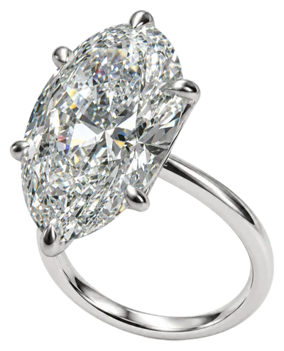
Laboratorio orafo · Piazza Duomo, Voghera
Da trent'anni disegniamo e realizziamo nel nostro laboratorio anelli, fedi e gioielli unici, pensati per una sola persona.
01 La pietra
Come questo brillante ovale, uscito dal nostro laboratorio. Taglio, purezza e colore si valutano con calma, pietra alla mano, finché trovi quella giusta per te e per il tuo budget.
02 La montatura
Sei griffe in oro bianco e una galleria sottile che lascia entrare la luce. Forma e proporzioni si decidono attorno alla pietra e alla tua mano, perché il gioiello resti comodo ogni giorno.
03 L'interno
All'interno della fascia incidiamo un nome, una data, una foto, perfino la tua impronta digitale. Un segno che rende il gioiello impossibile da copiare.
Parliamone al telefono: 0383 365940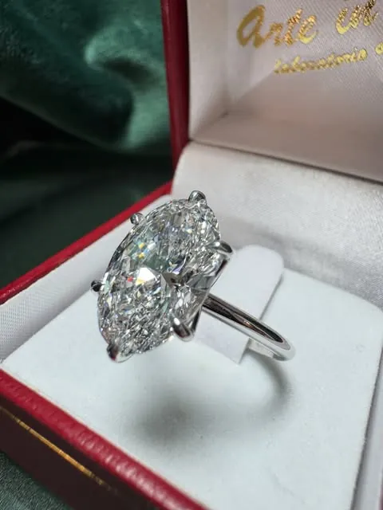
Dal disegno al gioiello
Su misura
Un gioiello su misura non si sceglie da una vetrina: nasce da una conversazione e prende forma nelle nostre mani, un passaggio alla volta.
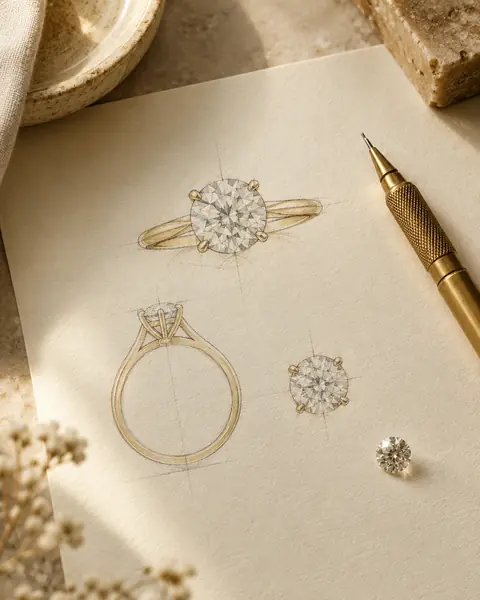
01
Ci racconti cosa desideri: una storia, una foto, anche solo un'emozione. Ne ricaviamo insieme un disegno.
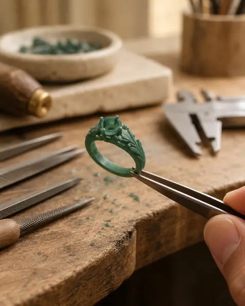
02
Dal disegno nasce il modello in scala reale: verifichiamo proporzioni e vestibilità prima di toccare il metallo.
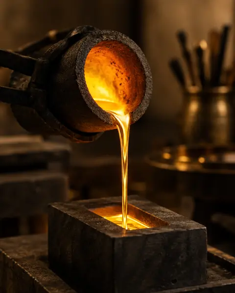
03
Il modello diventa oro: giallo, bianco o rosa. Da qui in poi ogni passaggio è fatto a mano, al banco.
04
Incastonatura, lucidatura, incisione. Il gioiello è pronto quando è perfetto, e te lo consegniamo di persona.
Al primo incontro definiamo insieme idea, tempi e costi.
Fissa il primo incontroDal nostro banco
Alcuni pezzi usciti di recente dal laboratorio di Piazza Duomo.
Solitario ovale in oro bianco
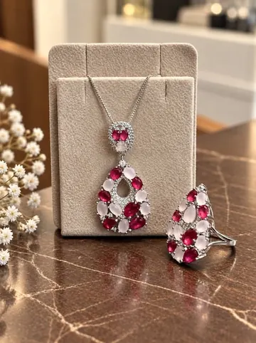
Parure con pietre rosse
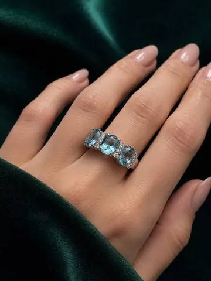
Trilogy con pietre azzurre

Pendente con opale
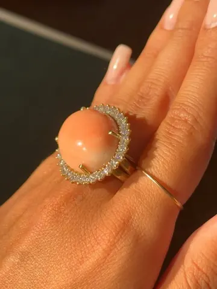
Anello con contorno di brillanti
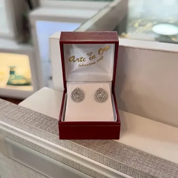
Orecchini con brillanti
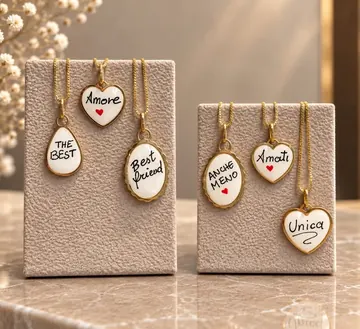
Ciondoli smaltati con dedica
Creazioni personalizzate
Profili, finiture e incisioni personalizzate, anche con la vostra impronta digitale.
Fedi nuziali personalizzateAnelli di fidanzamento, parure, gemelli: pensati insieme per il vostro giorno.
Anelli di fidanzamento su misura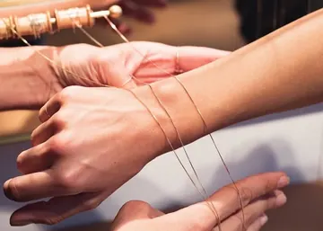
Una catena sottile chiusa direttamente al polso, senza fermaglio: da non togliere più.
Come funziona il bracciale saldatoUn volto, un disegno, una scrittura a mano riportati sul metallo.
Gioielli su misuraL'atelier
Arte in Oro è il laboratorio orafo di Anna Manuella e Giorgia Lucchetti, all'ombra del Duomo di Voghera. Trent'anni di mestiere, un banco da orafo e un'idea semplice: ogni persona merita un gioiello che parli di lei.
Qui non troverai un catalogo da sfogliare in fretta, ma qualcuno che ti ascolta.
30
anni al banco
da orafo
«Cortesi e professionali, ci hanno permesso di adattare e personalizzare le fedi.»
Su appuntamento
Vieni in laboratorio: guardiamo insieme idee, pietre e metalli. Chiamaci prima, così ti dedichiamo tutto il tempo che serve.
Domande frequenti
In Piazza Duomo 47, nel centro di Voghera (PV), accanto al Duomo. Siamo aperti dal martedì al sabato, 9:00–12:30 e 16:15–19:20.
Sì: disegniamo e realizziamo nel nostro laboratorio anelli di fidanzamento e solitari su misura, scegliendo insieme a te pietra, metallo e forma della montatura.
Sì. Profilo, finitura e incisione si decidono insieme; all’interno possiamo incidere nomi, date, una foto o perfino le vostre impronte digitali.
Sì, in laboratorio ripariamo gioielli e orologi ed eseguiamo argentature, dorature, rodiature, smaltature, incassature, sabbiature, incisioni e puliture.
È una catenina sottile senza fermaglio, chiusa con una piccola saldatura direttamente al polso: si indossa sempre, anche sotto la doccia.
Per le creazioni su misura ti consigliamo di chiamare lo 0383 365940 e fissare un appuntamento: così ti dedichiamo tutto il tempo necessario.
Orari e contatti
| Martedì – Sabato | 9:00 – 12:30 16:15 – 19:20 |
|---|---|
| Lunedì | Chiuso |
| Domenica | Chiuso |
Per una consulenza dedicata ti consigliamo di prenotare.